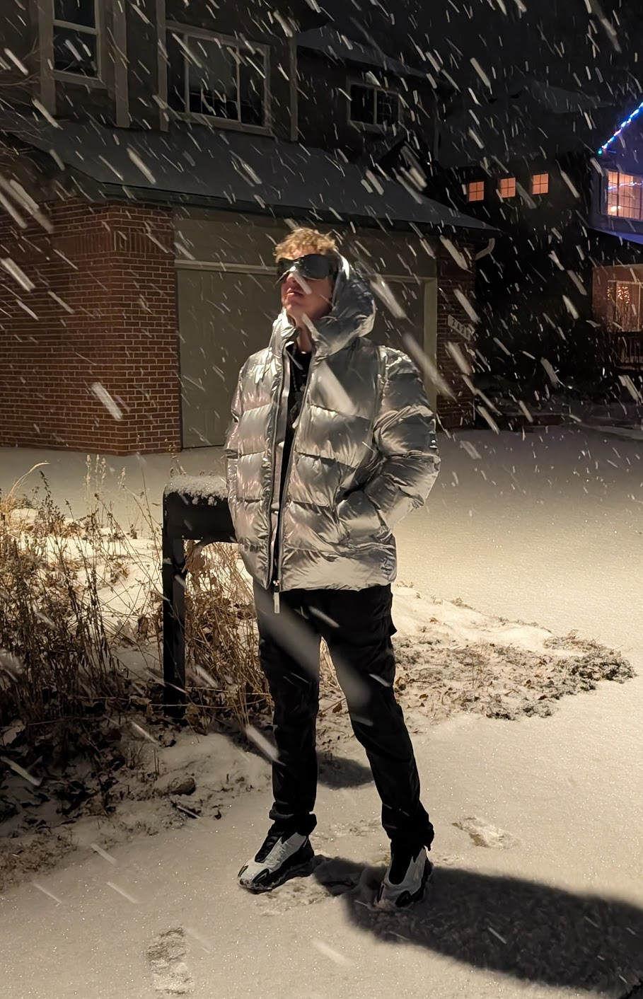

About Me

I'm Jace, a senior at CU Boulder, majoring in Computer Science and minoring in Business. I'm really into design, engineering, and entrepreneurship.
Spending time with my friends, playing basketball, and hiking/rock scrambling are what I live for. I watch the NBA and my favorite player is the almighty Nikola Jokic.
I'm in this Universal Design course to learn more about accessibility and how to make my websites and especially web apps more accessible to everyone.